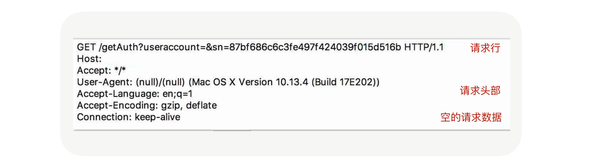
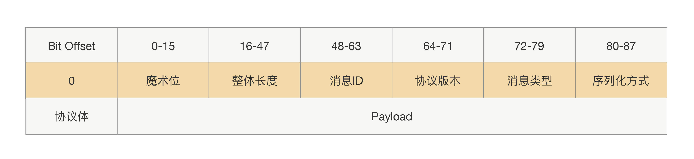
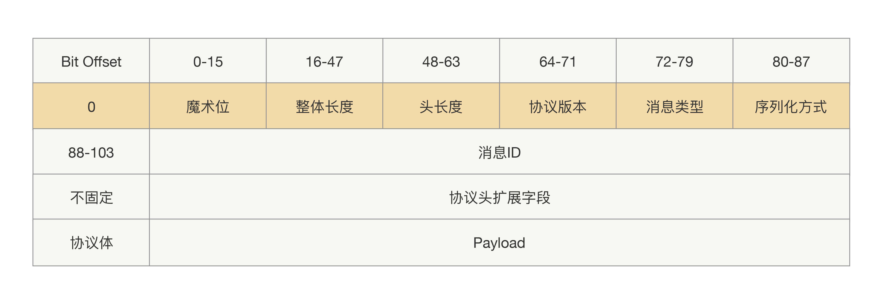

- 00 开篇词 别老想着怎么用好RPC框架，你得多花时间琢磨原理.md.html
- 01 核心原理：能否画张图解释下RPC的通信流程？.md.html
- 02 协议：怎么设计可扩展且向后兼容的协议？.md.html
- 03 序列化：对象怎么在网络中传输？.md.html
- 04 网络通信：RPC框架在网络通信上更倾向于哪种网络IO模型？.md.html
- 05 动态代理：面向接口编程，屏蔽RPC处理流程.md.html
- 06 RPC实战：剖析gRPC源码，动手实现一个完整的RPC.md.html
- 07 架构设计：设计一个灵活的RPC框架.md.html
- 08 服务发现：到底是要CP还是AP？.md.html
- 09 健康检测：这个节点都挂了，为啥还要疯狂发请求？.md.html
- 10 路由策略：怎么让请求按照设定的规则发到不同的节点上？.md.html
- 11 负载均衡：节点负载差距这么大，为什么收到的流量还一样？.md.html
- 12 异常重试：在约定时间内安全可靠地重试.md.html
- 13 优雅关闭：如何避免服务停机带来的业务损失？.md.html
- 14 优雅启动：如何避免流量打到没有启动完成的节点？.md.html
- 15 熔断限流：业务如何实现自我保护_.md.html
- 16 业务分组：如何隔离流量？.md.html
- 17 异步RPC：压榨单机吞吐量.md.html
- 18 安全体系：如何建立可靠的安全体系？.md.html
- 19 分布式环境下如何快速定位问题？.md.html
- 20 详解时钟轮在RPC中的应用.md.html
- 21 流量回放：保障业务技术升级的神器.md.html
- 22 动态分组：超高效实现秒级扩缩容.md.html
- 23 如何在没有接口的情况下进行RPC调用？.md.html
- 24 如何在线上环境里兼容多种RPC协议？.md.html
- 加餐 RPC框架代码实例详解.md.html
- 加餐 谈谈我所经历过的RPC.md.html
- 答疑课堂 基础篇与进阶篇思考题答案合集.md.html
- 结束语 学会从优秀项目的源代码中挖掘知识.md.html
- 捐赠
02 协议：怎么设计可扩展且向后兼容的协议？
你好，我是何小锋。上一讲我分享了RPC原理，其核心是让我们像调用本地一样调用远程，帮助我们的应用层屏蔽远程调用的复杂性，使得我们可以更加方便地构建分布式系统。总结起来，其实就一个关键字：透明化。
接着上一讲的内容，我们再来聊聊RPC协议。
一提到协议，你最先想到的可能是 TCP协议、UDP协议等等，这些网络传输协议的实现在我看来有点晦涩难懂。虽然在RPC中我们也会用到这些协议，但这些协议更多的是对我们上层应用是透明的，我们RPC在使用过程中并不太需要关注他们的细节。那我今天要讲的RPC协议到底是什么呢？
可能我举个例子，你立马就明白了。HTTP协议是不是很熟悉（本讲里面所说的HTTP默认都是1.X）？ 这应该是我们日常工作中用得最频繁的协议了，每天打开浏览器浏览的网页就是使用的HTTP协议。那HTTP协议跟RPC协议又有什么关系呢？看起来他俩好像不搭边，但他们有一个共性就是都属于应用层协议。
所以我们今天要讲的RPC协议就是围绕应用层协议展开的。我们可以先了解下HTTP协议，我们先看看它的协议格式是什么样子的。回想一下我们在浏览器里面输入一个URL会发生什么？抛开DNS解析暂且不谈，浏览器收到命令后会封装一个请求，并把请求发送到DNS解析出来的IP上，通过抓包工具我们可以抓到请求的数据包，如下图所示：

协议的作用
看完HTTP协议之后，你可能会有一个疑问，我们为什么需要协议这个东西呢？没有协议就不能通信吗？
我们知道只有二进制才能在网络中传输，所以RPC请求在发送到网络中之前，他需要把方法调用的请求参数转成二进制；转成二进制后，写入本地Socket中，然后被网卡发送到网络设备中。
但在传输过程中，RPC并不会把请求参数的所有二进制数据整体一下子发送到对端机器上，中间可能会拆分成好几个数据包，也可能会合并其他请求的数据包（合并的前提是同一个TCP连接上的数据），至于怎么拆分合并，这其中的细节会涉及到系统参数配置和TCP窗口大小。对于服务提供方应用来说，他会从TCP通道里面收到很多的二进制数据，那这时候怎么识别出哪些二进制是第一个请求的呢？
这就好比让你读一篇没有标点符号的文章，你要怎么识别出每一句话到哪里结束呢？很简单啊，我们加上标点，完成断句就好了。
同理在RPC传输数据的时候，为了能准确地“断句”，我们也必须在应用发送请求的数据包里面加入“句号”，这样才能帮我们的接收方应用从数据流里面分割出正确的数据。这个数据包里面的句号就是消息的边界，用于标示请求数据的结束位置。举个具体例子，调用方发送 AB、CD、EF 3 个消息，如果没有边界的话，接收端就可能收到ABCDEF或者ABC、DEF 这样的消息，这就会导致接收的语义跟发送的时候不一致了。
所以呢，为了避免语义不一致的事情发生，我们就需要在发送请求的时候设定一个边界，然后在收到请求的时候按照这个设定的边界进行数据分割。这个边界语义的表达，就是我们所说的协议。
如何设计协议？
理解了协议的作用，我们再来看看在RPC里面是怎么设计协议的。可能你会问：“前面你不是说了HTTP协议跟RPC都属于应用层协议，那有了现成的HTTP协议，为啥不直接用，还要为RPC设计私有协议呢？”
这还要从RPC的作用说起，相对于HTTP的用处，RPC更多的是负责应用间的通信，所以性能要求相对更高。但HTTP协议的数据包大小相对请求数据本身要大很多，又需要加入很多无用的内容，比如换行符号、回车符等；还有一个更重要的原因是，HTTP协议属于无状态协议，客户端无法对请求和响应进行关联，每次请求都需要重新建立连接，响应完成后再关闭连接。因此，对于要求高性能的RPC来说，HTTP协议基本很难满足需求，所以RPC会选择设计更紧凑的私有协议。
那怎么设计一个私有RPC协议呢？
在设计协议前，我们先梳理下要完成RPC通信的时候，在协议里面需要放哪些内容。
首先要想到的就是我们前面说的消息边界了，但RPC每次发请求发的大小都是不固定的，所以我们的协议必须能让接收方正确地读出不定长的内容。我们可以先固定一个长度（比如4个字节）用来保存整个请求数据大小，这样收到数据的时候，我们先读取固定长度的位置里面的值，值的大小就代表协议体的长度，接着再根据值的大小来读取协议体的数据，整个协议可以设计成这样：
但上面这种协议，只实现了正确的断句效果，在RPC里面还行不通。因为对于服务提供方来说，他是不知道这个协议体里面的二进制数据是通过哪种序列化方式生成的。如果不能知道调用方用的序列化方式，即使服务提供方还原出了正确的语义，也并不能把二进制还原成对象，那服务提供方收到这个数据后也就不能完成调用了。因此我们需要把序列化方式单独拿出来，类似协议长度一样用固定的长度存放，这些需要固定长度存放的参数我们可以统称为“协议头”，这样整个协议就会拆分成两部分：协议头和协议体。
在协议头里面，我们除了会放协议长度、序列化方式，还会放一些像协议标示、消息ID、消息类型这样的参数，而协议体一般只放请求接口方法、请求的业务参数值和一些扩展属性。这样一个完整的RPC协议大概就出来了，协议头是由一堆固定的长度参数组成，而协议体是根据请求接口和参数构造的，长度属于可变的，具体协议如下图所示：

可扩展的协议
刚才讲的协议属于定长协议头，那也就是说往后就不能再往协议头里加新参数了，如果加参数就会导致线上兼容问题。举个具体例子，假设你设计了一个88Bit的协议头，其中协议长度占用32bit，然后你为了加入新功能，在协议头里面加了2bit，并且放到协议头的最后。升级后的应用，会用新的协议发出请求，然而没有升级的应用收到的请求后，还是按照88bit读取协议头，新加的2个bit会当作协议体前2个bit数据读出来，但原本的协议体最后2个bit会被丢弃了，这样就会导致协议体的数据是错的。
可能你会想：“那我把参数加在不定长的协议体里面行不行？而且刚才你也说了，协议体里面会放一些扩展属性。”
没错，协议体里面是可以加新的参数，但这里有一个关键点，就是协议体里面的内容都是经过序列化出来的，也就是说你要获取到你参数的值，就必须把整个协议体里面的数据经过反序列化出来。但在某些场景下，这样做的代价有点高啊！
比如说，服务提供方收到一个过期请求，这个过期是说服务提供方收到的这个请求的时间大于调用方发送的时间和配置的超时时间，既然已经过期，就没有必要接着处理，直接返回一个超时就好了。那要实现这个功能，就要在协议里面传递这个配置的超时时间，那如果之前协议里面没有加超时时间参数的话，我们现在把这个超时时间加到协议体里面是不是就有点重了呢？显然，会加重CPU的消耗。
所以为了保证能平滑地升级改造前后的协议，我们有必要设计一种支持可扩展的协议。其关键在于让协议头支持可扩展，扩展后协议头的长度就不能定长了。那要实现读取不定长的协议头里面的内容，在这之前肯定需要一个固定的地方读取长度，所以我们需要一个固定的写入协议头的长度。整体协议就变成了三部分内容：固定部分、协议头内容、协议体内容，前两部分我们还是可以统称为“协议头”，具体协议如下：

最后，我想说，设计一个简单的RPC协议并不难，难的就是怎么去设计一个可“升级”的协议。不仅要让我们在扩展新特性的时候能做到向下兼容，而且要尽可能地减少资源损耗，所以我们协议的结构不仅要支持协议体的扩展，还要做到协议头也能扩展。上述这种设计方法来源于我多年的线上经验，可以说做好扩展性是至关重要的，期待这个协议模版能帮你避掉一些坑。
总结
我们人类区别于其他动物的一个很大原因，就是我们能够通过语言去沟通，用文字去沉淀文明，从而让我们能站在巨人的肩膀上成长，但为了保证我们记录的文字能够被其他人理解，我们必须通过符号去实现断句，否则就可能导致文字的意义被曲解，甚至闹出笑话。
在RPC里面，协议的作用就类似于文字中的符号，作为应用拆解请求消息的边界，保证二进制数据经过网络传输后，还能被正确地还原语义，避免调用方跟被调用方之间的“鸡同鸭讲”。
但我们在设计协议的时候，也不能只单纯考虑满足目前功能，还应该从更高的层次出发。就好比我们设计系统架构一样，我们需要保证设计出来的系统能够能很好地扩展，支持新增功能。
课后思考
好了，今天的内容就到这里，最后留一道思考题。今天我们讨论过RPC不直接用HTTP协议的一个原因是无法实现请求跟响应关联，每次请求都需要重新建立连接，响应完成后再关闭连接，所以我们要设计私有协议。那么在RPC里面，我们是怎么实现请求跟响应关联的呢？
欢迎留言和我分享你的思考，也欢迎你把文章分享给你的朋友，邀请他加入学习。我们下节课再见！
© 2019 - 2023 Liangliang Lee. Powered by gin and hexo-theme-book.